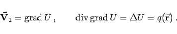

Reines Quellenfeld oder wirbelfreies Quellenfeld wird ein Feld genannt, dessen Rotation überall Null ist. Ist die Quelldichte , dann gilt:
In diesem Falle besitzt das Feld ein Potential  , das in jedem beliebigen Punkt P bestimmt ist durch die POISSONsche Differentialgleichung
, das in jedem beliebigen Punkt P bestimmt ist durch die POISSONsche Differentialgleichung
|  | (13.126a) |
(In der Physik gilt meist .) Die Berechnung von U erfolgt über
Die Integration erfaßt den gesamten Raum (s. Abbildung).
Die Divergenz von  muß differenzierbar sein und hinreichend schnell für sehr große Abstände abnehmen.
muß differenzierbar sein und hinreichend schnell für sehr große Abstände abnehmen.